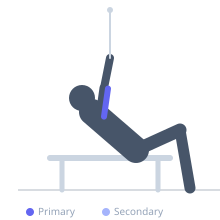
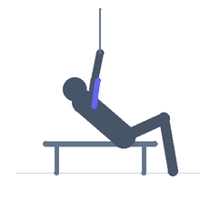

Exercise guide / Incline Cable Overhead Tricep Extension
Incline Cable Overhead Tricep Extension
The incline cable overhead extension is performed lying on an incline bench facing away from a low cable, with the arms raised overhead to extend the triceps against the cable's resistance. The incline provides back support and positions the arms at an angle that creates an extended stretch on the tricep long head throughout the movement. The cable maintains constant tension unlike free weight incline overhead extensions.
Primary muscles
triceps long head
Secondary muscles
triceps lateral head
triceps medial head
Equipment
Cable Machine (Low Pulley)
Adjustable Bench (Incline / Decline)


Starting position
- Set an incline bench in front of a low cable pulley, facing away. Lie back on the incline. Hold a rope or straight bar attached to the cable with arms overhead.
Setup
- Place the bench close to the pulley so the cable runs overhead without interference. Incline at 45 degrees.
Steps
- Step 1: Begin with elbows bent, hands near the head, feeling the tricep stretch.
- Step 2: Extend the elbows to straighten the arms overhead.
- Step 3: Hold the locked-out position briefly.
- Step 4: Return with control to the starting stretched position.
Coaching cues
- Elbows point toward the ceiling
- Stretch at the bottom — savor it
- Extend fully and squeeze
Breathing
- Exhale on extension, inhale on return.
Range of motion
- Full elbow flexion with overhead stretch to full extension.
Tempo
- 2-1-3-0
Common mistakes
- Elbows flaring outward
- Bench not positioned close enough to the cable (causes awkward pull angle)
Safety
- Ensure the bench is stable and the cable path is clear
Training
- hypertrophy: 10–15 reps
- hypertrophy: 3–4 sets
- Rest: {'hypertrophy': 75}